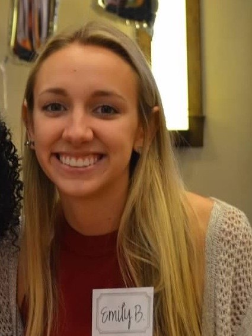

EXPLORE TECH
Registration for our Spring 2020 program is now open!
For 7th to 9th grade girls
This program gives our participants the opportunity to investigate specific topics in depth. Participants can choose one or both topics, to meet six or twelve times per semester on School of Mines campus.

- Time: 5:00-6:15
- Day: Offered Monday - Thursday (choose ONE day of the week, depending on the topic, as listed below)
- Location: Colorado School of Mines campus
- Cost: $80 per program, or, $150 for both Computer Science and Environmental Engineering
2020 Spring Session
Girls can join us for exploration in EITHER Computer Science or Environmental Engineering, or BOTH!
Computer Science
Course Title: Robotics
Course Description: Robotics technology impacts almost every aspect of our lives. From homes and cars to hospitals and factories, our world today has been transformed by robots. As more advanced technology continues to be developed, it's valuable to understand how they work. We will introduce robotics through a multi-week program that will lead participants through the building and programming of mBots, with exciting activities each week! No programming experience is necessary.
-
Computer Science session days/dates (choose ONE session):
- MONDAY: February 3, February 24, March 9, April 6
- TUESDAY: February 4, February 25, March 10, April 7
Course Instructor:
 Lucy is a junior in Computer Science and Engineering Physics. This is her third year working with Dectech. She loves this job because it allows for her to share her passion for STEM with young girls and inspire them to change the future! Outside of school and work, she loves hiking, climbing, and kayaking.
Lucy is a junior in Computer Science and Engineering Physics. This is her third year working with Dectech. She loves this job because it allows for her to share her passion for STEM with young girls and inspire them to change the future! Outside of school and work, she loves hiking, climbing, and kayaking.
Environmental Engineering
Course Title:Geographical Information Systems (GIS)
Course Description:Geographic Information Systems (GIS) are computer systems used for capturing, storing, verifying, and displaying data related to positions on Earth's surface. GIS has thousands of applications, from city planning, to looking at animal migratory patterns, to studying glacial movement and retreat in the North Pole. Most people have probably used Google Maps at some point to get from one place to another; this would not be possible without GIS! In this session we will learn more about this extremely powerful field and its endless applications. Using various GIS mapping software, such as ArcMap, we will apply our knowledge and creativity to develop informational maps to display data about a topic of our choosing!
-
Environmental Engineering session Days/Dates (choose ONE session):
- WEDNESDAY: February 12, March 4, March 18, April 15
- THURSDAY: February 13, March 5, March 19, April 16
Course Instructors:
Emily is a senior studying environmental engineering with a minor in humanitarian engineering. She has worked for DECtech for a year and loves meeting all the intelligent and interesting girls who participate in the program. In her free time, she enjoys reading, hiking, and admiring dogs from afar.
For a printable flyer (pdf) about the current session of EXPLORE TECH, please click here.
Have questions? Please visit our FAQ page and find answers to popular questions.
To register for this program, click the REGISTER link in the purple navigation bar above.
Need more information? Please email us at stem-tech@mines.edu.
Financial scholarships available thanks to our sponsors